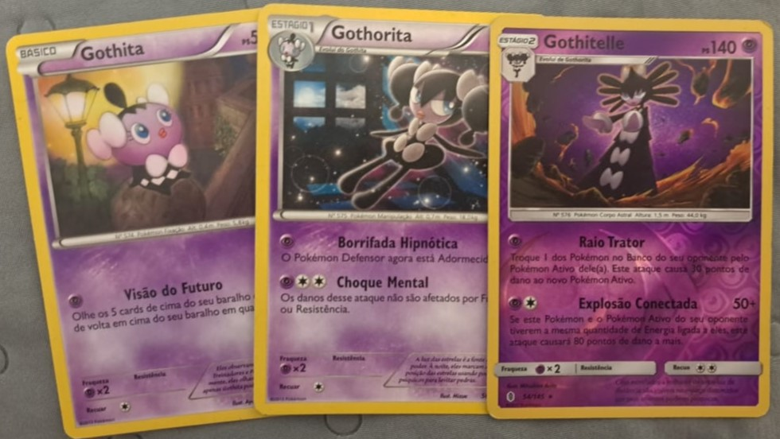
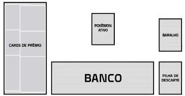

Pokemon TCG (Trading Card Game) é o jogo de cartas oficial do Pokemon, distribuido no Brasil pela Copag, tem quase 30 anos de história, sendo um dos maiores jogos de carta de seu esilo, então vamos aprender a joga-lo?
Os baralhos do Pokemon TCG possuem 60 cartas que são divididas em 3 categorias: os Pokemons, que podem ser básicos, de estagio 1 ou 2 as principais cartas, as energias, que são acopladas nos Pokemons para eles conseguirem realizar seus golpes, e os treinadores, que são divididos em 3 categorias, os itens, que não possuem limite de quantos você pode usar por turno, os apoiadores, que só podem ser ultilizados uma vez por turno, e os estádios, que alteram o jogo de ambos os jogadores e apenas o último que foi jogado fica ativo.

A partida é jogada 1v1 com cada jogador tendo seu proprio baralho. No ínicio do jogo ocorre a preparação, onde cada jogador embaralha seu baralho e coloca 6 cartas na área de prêmio, e depois compram 7 cartas, após a compra cada jogador deve colocar ao menos 1 Pokemon básico na área do Pokemon Ativo do campo, virados de cabeça para baixo, se ele desejar colocar outros ele deve coloca-los no banco.

Após ambos jogadores terem realizados a etapa de eles revelam os Pokemons que desceram em campo, quem começa a partida é descidio em um cara ou coroa. No primeiro turno do jogo não é permitido atacar o adversário ou evoluir seu Pokemon. As ações de um turno são, comprar uma carta no ínicio dele, jogar as cartas de treinador, equipar a energia do turno em um de seus Pokemons, podendo ser o ativo ou algum do banco, podendo ser equipado por padrão apenas uma energia por turno, com apoiadores e golpes de Pokemon podendo mudar isso, recuar, descartando a quantia de energias necessária, e atacar o adversário, as cartas de apoiador jogadas, pokemons mortos e as energias aclopadas a eles são descartadas na pilha de descarte.
Cada golpe custa uma quantidade de energia para ser realizados e podem demandar a de um tipo específico, indicado pelo símbolo do tipo, ou uma de qualquer tipo, indicado pelo símbolo do tipo normal.
Quando um Pokemon adversário chega a 0 de vida, quanto de vida que ele tem é indicado pelo número no canto superior direito, ele é nocauteado você compra uma carta na pilha de prêmio. Quando as 6 acabarem você vence.
Caractrísticas das cartas Pokemon:
As cartas dos Pokemons podem ter golpes e habilidades, com os golpes podendo ser usados apenas pelos pokemons ativos e custando um determinado custo de energia para serem executados, essa energia não é perdida, a não ser o golpe pessa para descarta-las,enquanto as habilidades funcionam no banco e não possuem custo de energia.
Outra mecânica é que algumas cartas podem causar efeitos negativos no seu Pokemon que são:
Adormecido: O Pokemon não pode atacar ou recuar, entre os turnos jogue uma moeda, se cair cara ele acorda, se for coroa, continua dormindo, nesse estado a carta é virada em sentido anti-horário.
Paralisado: O Pokemon não pode atacar ou recuar, é removida após o turno de jogador cem que o Pokemon está sobre este efeito, nesse estado a carta é virada em sentido horário.
Confuso: Um Pokémon confuso pode recuar e atacar, porém ao anunciar o ataque, você deverá jogar uma moeda. Se sair cara, o ataque funcionará normalmente, mas se sair coroa, seu Pokémon receberá 3 contadores de danos, com cada contador valendo 10 de dano. O Pokémon confuso precisa ficar virado para o jogador.
Queimado: Entre turnos coloque 2 marcadores de dano no Pokemon queimado e depois jogue uma moeda, se cair cara ele não está mais queimado, se cair coroa ele continua. Coloque um marcador de queimado para demostra que ela está ativa.
Envenenado: Entre turnos coloque 1 marcador de dano no Pokemon envenenado. Coloque um marcador de envenenado para demostra que ela está ativa.
Um Pokemon não pode ser queimado e envenenado ao mesmo tempo, a condição mais recente é que conta.
Também existem as c1artas Ex, V e as Gx, com a V podendo evoluir para uma Vmax, a Ex podendo megaevoluir e as Gx podendo ultilizar golpes poderosos de uso único por partida. Todos possuem a caractrísticas de que ao serem nocauteados o oponente compra 2 ou mais cartas de prêmio ao invez de 1. (Infelizmente não possuo uma carta V e Vmax, então usarei um exemplo da internet)